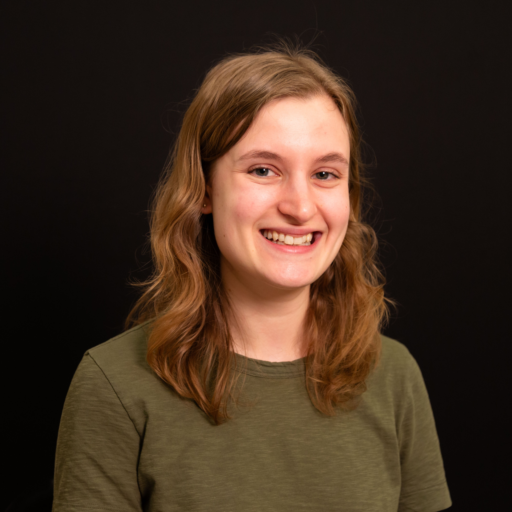

Teaching
Course Development
I have a strong interest in teaching pedagogy, specifically at the undergraduate level. I am especially interested in the utility of introductory astronomy classes, which have a unique ability to reach large numbers of young adults who otherwise are not interested in science, as a way to teach general scientific literacy to a broad swath of undergraduates.
In Spring 2024, I developed and taught AST199: Astronomy at the Frontier, at the University of Toronto. This course is part of a first-year seminar series that aims to teach students general university skills like reserach, writing, and public speaking. With no content requirements other than skill-building, my co-instructor and I developed a syllabus and course materials that aimed to teach students about scientific debates and paragidm shifts thourgh a series of historical and current astronomical case studies. We focused class activities and assigments on scientific writing and communication skills. If you would like to see my syllabus or other course materials, please send me an email.
Teaching and TAing
I have extensive experience teaching, both as a course instructor and a TA. I have taught and TAed for seminar courses (24 students), and TAed for large classes (1500 students) and associated tutorials (30-40 students). I have built up many contact hours with students, both through structured time such as lecturing and unstructured time such as office hours and help sessions. In particular, I have years of experience teaching introductory, non-major courses and working with students who do not have strong science backgrounds.
I also have experience with the logistical aspects of running both small and large courses, including Canvas development experience.
Student Supervision
I have supervised four undergraduate students on a variety of projects:
- Michelle Denny (supervised with Josh Speagle and Jacqueline Antwi-Danso) on a summer research project quantifying the misclassification rates of high redshift, massive quiescient galaxies.
- Rufat Ismayilov on a literature review project about high redshift galaxies discovered by JWST and their disagreement with lambdaCDM.
- Grisha Kit on a literature review project about high redshift galaixes discovered by JWST and their implications for galaxy formation and evolution models.
- Shu Yan Wang (supervised with Josh Speagle) on a summer research project about Bayesian model comparison techniques and their applications to astronomical data.
Mentoring
I am involved in numerous mentoring programs at UofT. I was a member of the department-wide Training and Mentoring Committee for two years, and in that role I served as the chair for both the postdoc-grad student mentoring program and the grad student peer mentoring program. I have also mentored three undergraduate astronomy majors at UofT.
If you'd like to get in touch, my email address is sam.berek[at]mail.utoronto.ca